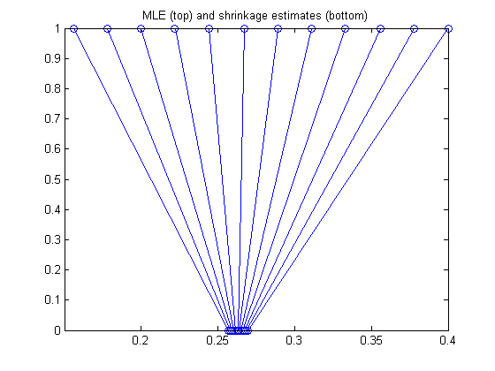
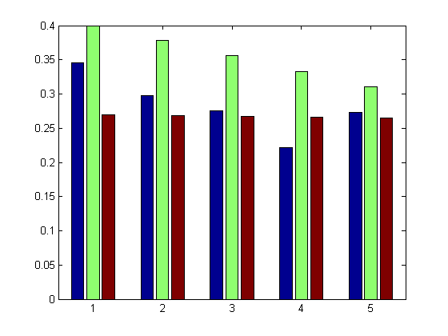
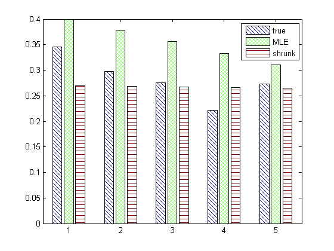

Baseball Batting Average Shrinkage Estimates
Reproduce example from "Data Analysis Using Stein's Estimator and its Generalizations" Bradley Efron; Carl Morris JASA Vol. 70, No. 350. (Jun., 1975), pp. 311-319.
Contents
Data
1970 batting averages for 18 major league players. first column = batting average for first 45 at bats 2nd column = batting everage for remainder of season
data = [0.400 0.346;
0.378 0.298
0.356 0.276
0.333 0.222
0.311 0.273
0.311 0.270
0.289 0.263
0.267 0.210
0.244 0.269
0.244 0.230
0.222 0.264
0.222 0.256
0.222 0.303
0.222 0.264
0.222 0.226
0.200 0.285
0.178 0.316
0.156 0.200];
Data Transformation
Y = data(:,1); p = data(:,2); n = 45; x = sqrt(n)*asin(2*Y-1); % arcsin transform d = length(x); xbar = mean(x); V = sum((x-xbar).^2); s2 = V/d; %B = (d-3)/V;% Efron-Morris shrinkage sigma2 = 1; % by construction of the arcsin transform B = sigma2/(sigma2 + max(0, s2-sigma2)); % EB shrunkTransformed = xbar + (1-B)*(x-xbar); shrunk = 0.5*(sin(shrunkTransformed/sqrt(n))+1); % untransform MLE = Y;
Plot Shrinkage Estimates
figure; plot(MLE, ones(1, d) ,'o'); hold on plot(shrunk, 0*ones(1, d), 'o'); for i=1:d line([Y(i); shrunk(i)], [1; 0]); end title('MLE (top) and shrinkage estimates (bottom)') printPmtkFigure shrinkageDemoBaseballParams;
Histograms
figure;
ndx = 1:5;
h = bar([p(ndx)';
MLE(ndx)'; shrunk(ndx)']');
legend({'true', 'MLE', 'shrunk'})
[im_hatch, colorlist] = applyhatch_pluscolor(gcf,'\-x.', 1);
title(sprintf('MSE MLE = %6.4f, MSE shrunk = %6.4f', mse(p,MLE), mse(p,shrunk)));
printPmtkFigure shrinkageDemoBaseballPred;
 